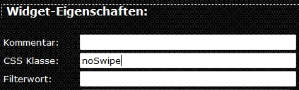

Dieses Widget ermöglicht Navigation durch Wisch-Gesten
Attribute
Left-nav_view
Name der View beim Wischen nach Links
Right-nav_view
Name der View beim Wischen nach Rechts
???-out effect
Effect der auszublendenen View
???-in effect
Effect der einzublendenen View
???-???-opt
ggf. Optionen für den Effect
duration
Dauer der Animation in ms
Hinweis:
Wenn auf der View zb. Slider vorhanden sind, kann man diese mit dem Eintrag "noSwipe" bei "CSS Klasse:" von der Swipe erkennung ausschliesen
